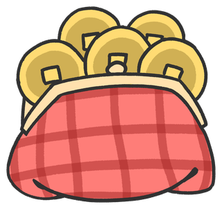
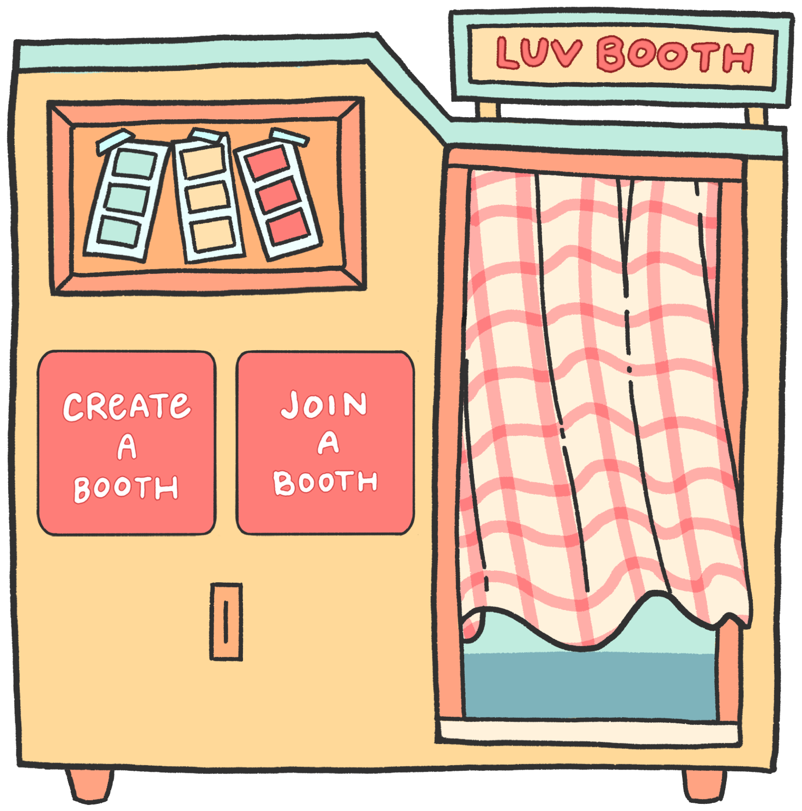
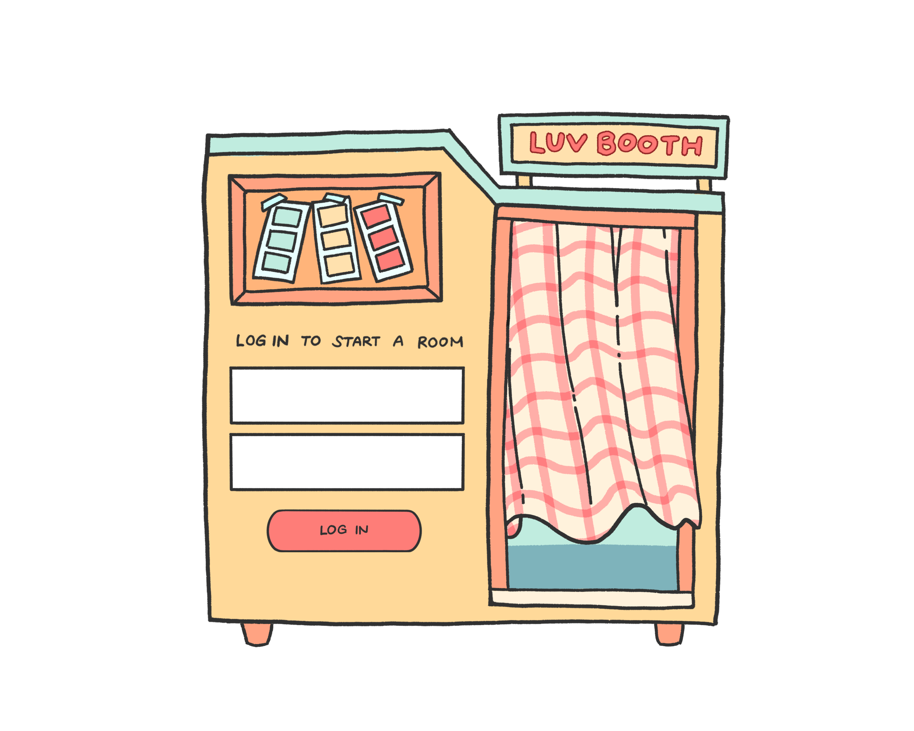
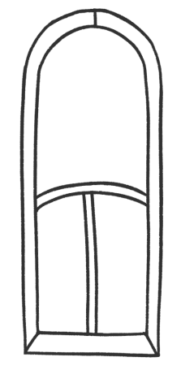
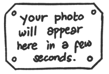

log in to start a room
set a new password
your coins & recaps are tied to your account — nothing else is saved
camera access is required to use Luv Booth — please allow camera access in your browser settings and refresh the page.
live sync lost — filter, theme, and countdown changes won't update for both of you until it's back
how long should the countdown be before each of your 10 shots?
0 of 4 selected — tap your favorites
your strip will show up here


session recap
link expires in 7 days
out of coins
you're out of coins — message us on Star Meks to get set up
log out?
are you sure you want to log out?
accounts you've created